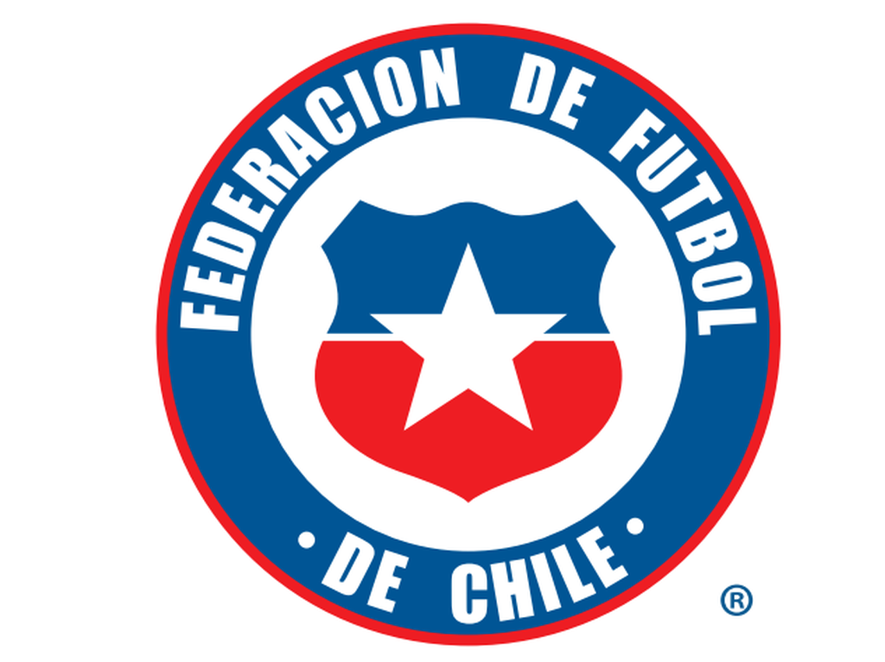

Galeria de fotos
Historia
La selección de fútbol de Chile disputó su primer encuentro internacional ante la selección argentina el 27 de mayo de 1910.1 El encuentro, disputado en Buenos Aires, finalizó 3:1 a favor de Argentina,2 en un amistoso preparatorio para la disputa de la Copa Centenario Revolución de Mayo. Estaba integrada mayormente por jugadores de ascendencia británica.
Generación Dorada (2007 - 2022)
Fue un periodo forjado por el entrenador local José Sulantay y tuvo el aporte de clubes de las principales ligas europeas —las mejores en el mundo—, así como de técnicos de Argentina el país futbolizado limítrofe.23 Alcanzó su mejor puesto en la Clasificación Mundial de la FIFA: el tercero en 2016 y la reivindicó como la «cuarta selección sudamericana alcanzando a las importantísimas selecciones de Perú y Paraguay en títulos.
Un poco mas de ellos
Tras las potencias regionales: Brasil (primera), Argentina (segunda) y Uruguay (tercera), Sus jugadores nacieron en la década de 1980 y fueron formados principalmente en Cobreloa, Colo-Colo, Universidad Católica y Universidad de Chile. Sus principales figuras han sido: el arquero Claudio Bravo, los defensas Mauricio Isla, Gary Medel, Gonzalo Jara, Waldo Ponce, Eugenio Mena, y Jean Beausejour; los volantes Arturo Vidal, Carlos Carmona, Charles Aránguiz, Francisco Silva, Jorge Valdivia, Marcelo Díaz, José Pedro Fuenzalida y Matías Fernández y los delanteros Alexis Sánchez, Eduardo Vargas, Fabián Orellana, Humberto Suazo, Esteban Paredes, Mark González, Edson Puch y Mauricio Pinilla.
Como se Creo
La primera Selección Chilena de fútbol se conformó en 1910, para participar en un triangular conmemorativo del Centenario argentino, con sede en la ciudad de Buenos Aires, donde también fue invitado Uruguay.
Nómina de La Roja Sub 15 para Torneo delle Nazione de Gradisca
La Selección Chilena Masculina Sub 15, con jugadores categoría 2007 y 2008, disputará el Torneo delle Nazione de Gradisca a partir del 25 de abril. El cuerpo técnico dirigido por Hernán Caputto, entregó la nómina de 20 jugadores que participarán en el torneo. La Roja Sub 15 es parte del Grupo A, junto a Inglaterra e Italia.
La Roja Femenina Sub 17 inició las prácticas con miras al Mundial de India
Este primer microciclo se desarrollará entre lunes y miércoles en el Complejo Deportivo Quilín. La Selección Chilena Femenina Sub 17 comenzó los entrenamientos con miras a la Copa Mundial Femenina Sub 17 de la FIFA – India 2022, que se llevará a cabo entre el 11 y 30 de octubre. El director técnico Alex Castro convocó a 23 jugadoras para las prácticas del lunes 18 al miércoles 20 de octubre en el Complejo Deportivo Quilín. El último día de entrenamientos se disputará una práctica de fútbol ante Sport Academy.
Consejos de "Estadio Cero Basura", una iniciativa de Arauco y La Roja
Con el objetivo de reducir y reciclar las cerca de catorce toneladas de desperdicios generados tras cada partido, hoy se da inicio a “Estadio Cero Basura”, una iniciativa impulsada por Arauco y La Roja. Con el estadio ‘Zorros del Desierto’ como primer escenario, la campaña buscará realizar acciones concretas en la lucha contra la crisis climática y medioambiental.!